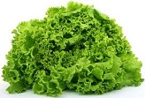
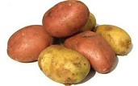
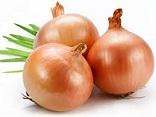
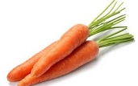
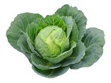

A alface � uma hortali�a anual de seiva leitosa, tipicamente de inverno, cultivada h� milhares de anos e que sofreu intenso melhoramento gen�tico at� chegarmos nas variedades atuais. Hoje em dia h� in�meras variedades, de caracter�sticas diversas e que propiciam o cultivo o ano inteiro. As principais variedades agrupam-se em alfaces de cabe�a crespa, de cabe�a lisa, romana, de folha e de haste. As variedades mais importantes comercialmente encaixam-se nos dois primeiros grupos, embora as demais sejam bastante conhecidas e populares em hortas dom�sticas tamb�m.

A batata � um tub�rculo que possui um formato arredondado irregular, sendo que sua casca � fina e de cor amarelada (caso da batata mais comum do tipo inglesa). Alguns tipos de batata possuem casca de cor avermelhada. Possui baixa quantidade de gordura e cont�m vitaminas do complexo B e vitamina C. Ao natural, 100 gramas de batata possui, em m�dia, 65 calorias. Por�m, quando frita este n�mero cresce bastante. � muito utilizada na culin�ria em saladas, acompanhamento de carnes, pur�s e frita.

A cebola � uma planta bienal, mas que � normalmente cultivada como uma anual. Seus bulbos s�o consumidos crus ou s�o preparados em uma grande variedade de maneiras, e suas folhas ocas, quando jovens, podem ser usadas como um substituto para as folhas das cebolinhas. Existe atualmente um grande n�mero de cultivares de cebola, com plantas que geralmente atingem de 15 a 50 cm de altura durante o cultivo (mas podem chegar a 1,2 m de altura quando est�o florescendo, o que ocorre apenas no segundo ano de vida destas plantas). Seus bulbos, que podem variar de 2 a 15 cm de di�metro, podem ter a pel�cula externa ou casca (os cat�filos externos) branca, amarela, vermelha ou roxa.

A cenoura � uma das hortali�as mais populares do mundo. Os cultivares mais comuns t�m ra�zes prim�rias de cor laranja, mas h� tamb�m cenouras roxas, amarelas, vermelhas e brancas. Quanto � forma, as cenouras podem ser cil�ndricas, c�nicas ou arredondadas. Al�m das ra�zes prim�rias, que s�o consumidas cruas ou s�o utilizadas em muitos tipos de receitas culin�rias, as folhas tamb�m podem ser consumidas, embora seu consumo seja menos comum, pois t�m um forte sabor.

As couves s�o plantas da mesma esp�cie que o repolho, a couve-flor e o br�colis. As couves n�o formam cabe�as compactas de folhas como os repolhos, e sim folhas livres. H� cultivares com folhas de diversas formas e cores, podendo ser crespas ou lisas, largas ou estreitas, verde-escuras, verde-claras, roxas, rosadas, brancas ou esbranqui�adas. Alguns cultivares de couve, conhecidos como couves-ornamentais ou repolhos-ornamentais, s�o muito apreciados como plantas de jardim e para decora��o de mesas, devido as cores e padr�es de suas folhas. Alguns outros tipos de couve que s�o cultivadas para consumo humano ou de animais s�o as couves-manteiga ou couves-galegas, as couves-tronchudas ou couves-portuguesas, as couves-crespas, as couves-forrageiras e as couves-palmeira.